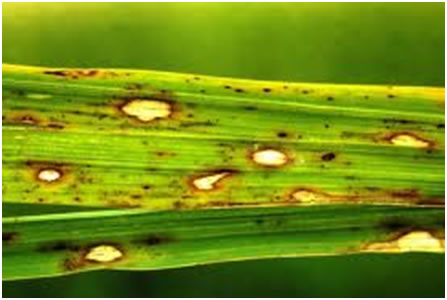
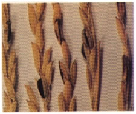

RICE :: FUNGAL DISEASES :: STACKBURN DISEASE
Stackburn disease - Trichoconis padwickii (Syn: Alternaria padwickii)
Symptoms
Leaves and ripening grains are affected. On leaves circular to oval spots with dark brown margins are formed. The center of the spot turns light brown or white with numerous minute dots. On the glumes reddish brown spots appear. The kernels may shrivel and become brittle.
|  |
Pathogen
Conidia are elongated with a long beak at the tip, 3 to 5 septate, thick walled and
constricted at the septa.
Managemen
- Treat the seeds with Thiram or Captan or Mancozeb at 2g/kg.
- Hot water treatment at 54˚ C for 15 minutes is also effective.
- Burn the stubbles and straw in the field.
Bunt or Kernel Smut or black smut - Tilletia barclayana
Minute black pustules or streaks are formed on the grains which burst open at the time of ripening. The grains may be partially or entirely replaced by the fungal spores. The sorus pushes the glumes apart exposing the black mass of spores. Only a few flowers are infected in an inflorescence. The fungus survives as chlamydospores for one or more years under normal condition and 3 years in stored grains.
|  |